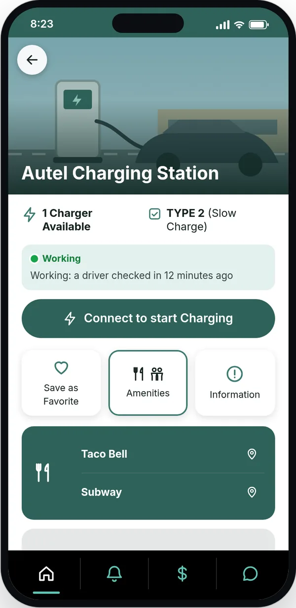

Course projectMobility · 4 min read
One app for every charger
EV drivers juggle apps to find a charger that works, fits their car and takes their payment. Our team of 4 designed one app for the whole stop: find, check in, charge and pay, with what is around each station shown up front. Then we tested it with 10 people.
TestedUsability tested; not launched
Too many apps, and no way to know
Each charging network wants its own app, card or membership. Drivers can't tell if a charger works until they arrive, and no app says whether a station feels safe at night.
Why: Range anxiety isn't only about the battery. It's about not trusting the information.
- Halfof 3,300 drivers were moderately or highly worried about range
- 25%ran into unavailable or incompatible chargers
- 15%+felt unsafe at a station, up from about 5% the year before
Studies, apps and owner forums
We reviewed peer-reviewed studies and industry reports published since 2012, when the first charging apps appeared, plus EV owner forums. Then we compared the main apps, including Tesla, ChargePoint, Electrify America, PlugShare and EVgo.
- No app put safety and amenities first.
- Apps that cover every network, like PlugShare, had information but no way to pay.
- Network apps took payment, but only on their own network.
Why: Published research showed patterns across thousands of drivers before we designed for a handful.
Four themes from the research
- Range anxietythe fear of running out of charge, worst on long trips
- Reliabilitycharging speed, compatibility, and whether a charger works
- Safety and amenitieslighting, restrooms and food nearby
- Paymenta different app or card for each network
Four ideas each, in four minutes
We wrote one problem statement: drivers juggle several apps for charger speed, compatibility, availability, payment, amenities and safety. Then each of us sketched 4 ideas in 4 minutes, and we voted on the features to keep.
- Plan a trip with working chargers on the way.
- One payment for every network.
- Battery health and low-charge alerts.
- Safety and amenities at every station.
Why: One more single-purpose app would only add to the juggling, so we designed one app for the whole stop.
Familiar maps, clear status, one wallet
We sketched the flows, then built the screens in Figma, guided by 4 usability rules: familiar patterns like Google Maps, clear system status, user control, and preventing errors, like checking that a charger fits your car.
Check in and pay, with no RFID card. Key decision 1One payment for every network
The thinking: Each network wanted its own app, card or membership. Here you check in and pay in one place, with no RFID card.
TestedThe hardest task in testing, so it changed afterwards. See testing.

What's nearby while you charge. Key decision 2Show what's around the charger
The thinking: Research showed many drivers, especially women, worry about safety at quiet stations, and families need places to stop. So every station shows what is around it, like places to eat, before you drive there.
TestedTesters praised it across the board, and said no other app shows this.
Chargers along the route. Key decision 3Plan the trip, chargers included
The thinking: Range anxiety peaks on long trips in unfamiliar places. So you enter where you're going and see chargers along the route, with live traffic.
TestedNew EV drivers praised how simply it previews charging stops.
10 drivers, 3 tasks
We tested with 10 people: 5 new to EVs and 5 experienced drivers. Each found a nearby charger, found the battery health page, and charged and paid, thinking out loud while we timed them. Then everyone filled in the SUS survey.
- New drivers found a nearby charger in 5.46 seconds on average, and rated it 1.2 out of 5 for difficulty.
- Experienced drivers took 109.66 seconds to charge and pay, and rated it 3.66 out of 5: the clearest problem we found.
-
Changed after testing
Pay like the apps drivers already trust
The thinking: Experienced drivers expected payment to work like Tesla's: set up once, then automatic. So payment now uses your default method, and a pay button stays on screen.
BuiltChanged after testing; not tested again.
-
Changed after testing
Words people actually use
The thinking: "Phantom battery" confused people, so it became "stand-by", and the battery page got a simpler layout.
BuiltChanged after testing; not tested again.
What worked, and what came next
- 78.75average SUS, above the 68 benchmark
- 89.5SUS from people new to EVs
- 5.46 sto find a nearby charger, new drivers
- 10testers, 5 new and 5 experienced
Range anxiety is about trust
Reliable information calms drivers more than a bigger battery would.
Beginners and experts differ
New drivers loved the simplicity. Experienced drivers measured us against Tesla.
Amenities were the surprise
The feature no other app had was the one every tester praised.
What I'd do differently now
Ideas for a next version, not built yet.
Predict broken chargers
Learn from driver reports and history, and warn you before you drive to a charger that is likely down.
A hands-free trip assistant
Ask out loud for the next working charger with food nearby, without touching the screen.
Did you like this case study?
Tell me what worked, or what you'd change. It comes straight to me.